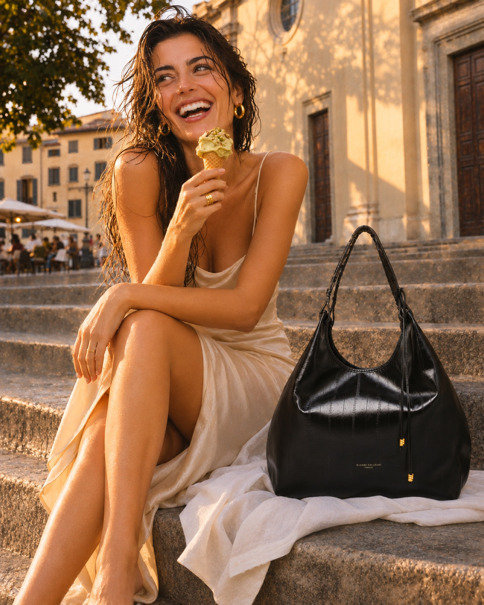
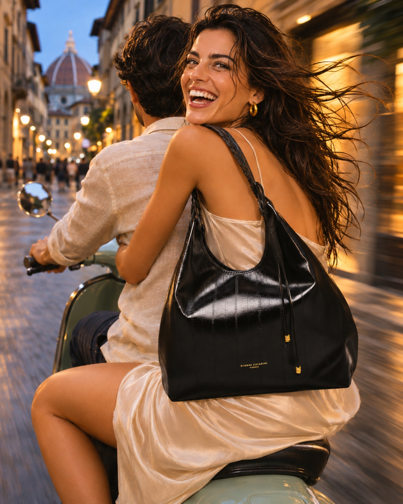

Dalla loggia al Piazzale, fino a sera.
Quattro scatti della stessa ragazza: al riparo sotto una loggia mentre piove, un gelato sui gradini di Santo Spirito, in Vespa con il Duomo alle spalle, il tramonto sul Piazzale. La borsa resta sempre protetta, al suo posto.


